LEGO
I’ve liked LEGO since I was a kid, and I never really stopped building it. The collection has just kept growing over the years.
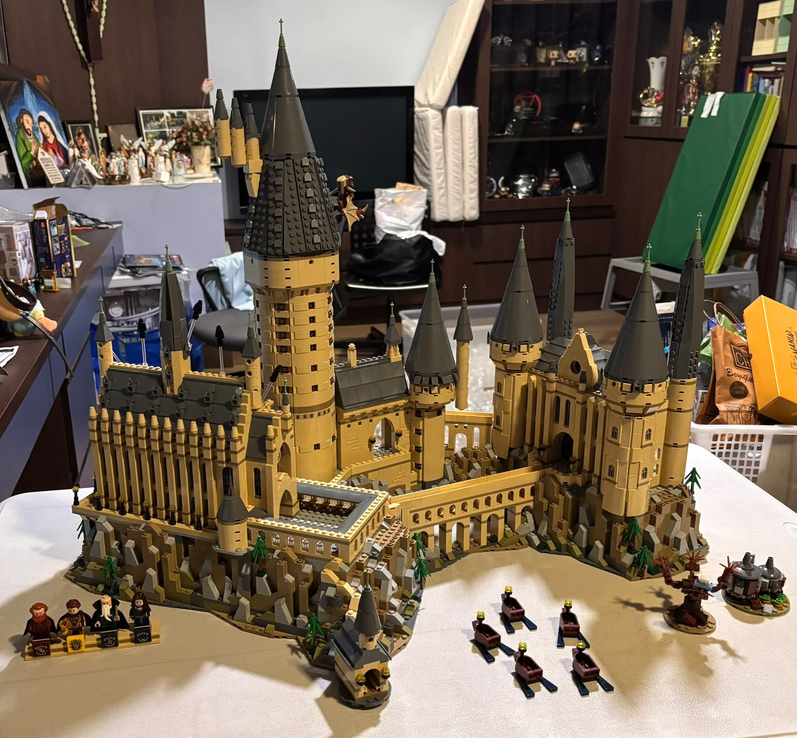
HELLO, I'M
Integrated Engineering student at UBC, drawn to the space where mechanical design, electronics, and hands-on building meet.
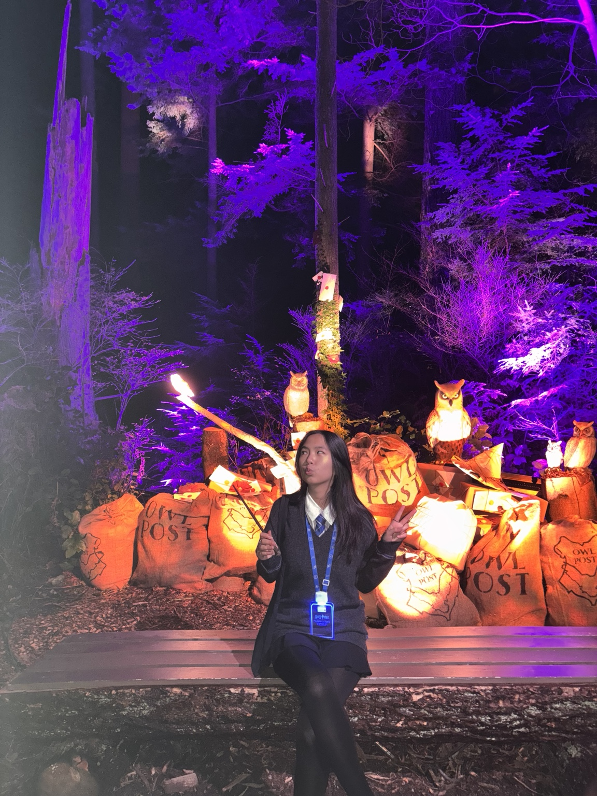
I like understanding how things work — and then trying to build them myself.
01 / BUILD JOURNEY
The projects got more technical. The curiosity stayed the same.
I’ve liked LEGO since I was a kid, and I never really stopped building it. The collection has just kept growing over the years.

A solo school project where I built a miniature automated parking gate using Arduino, an HC-SR04 ultrasonic sensor, and a servo-controlled barrier.
I built my keyboard from parts I chose individually after comparing different options for sound, feel, and build quality. I assembled it myself and tuned the switches before putting everything together.
Selected compatible components, assembled the system, integrated cooling and power, routed cables, and completed system setup.
I picked this up as a personal project because I was curious about how an automatic watch actually comes together. Building one from individual components was completely different from my other projects.
Building a foundation across mechanics, electronics, computation, design, prototyping, and systems thinking — with growing interests in mechanical, electrical, and mechatronics work.
02 / FEATURED ENGINEERING
Click a project to expand the engineering process, not just the résumé bullet.
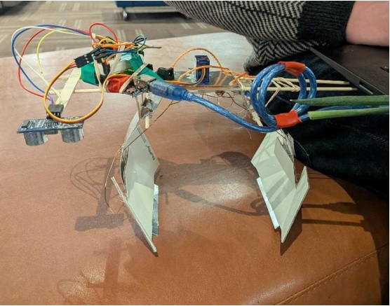
Arduino-controlled automated retrieval claw combining ultrasonic sensing, servo actuation, sheet-metal fabrication, and iterative testing.
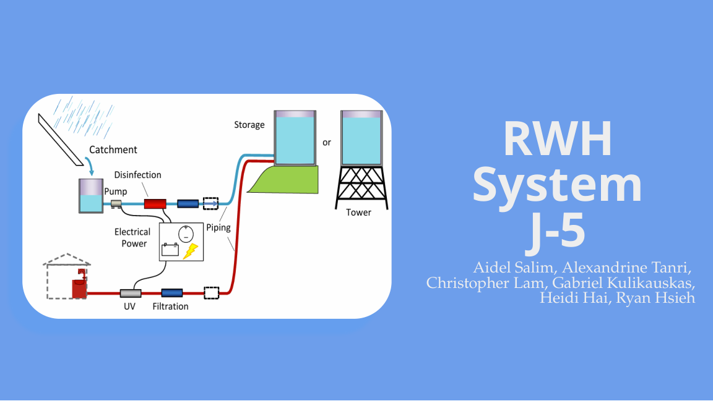
Off-grid potable-water system model balancing reliability, cost, consumption, environmental impact, and stakeholder needs.
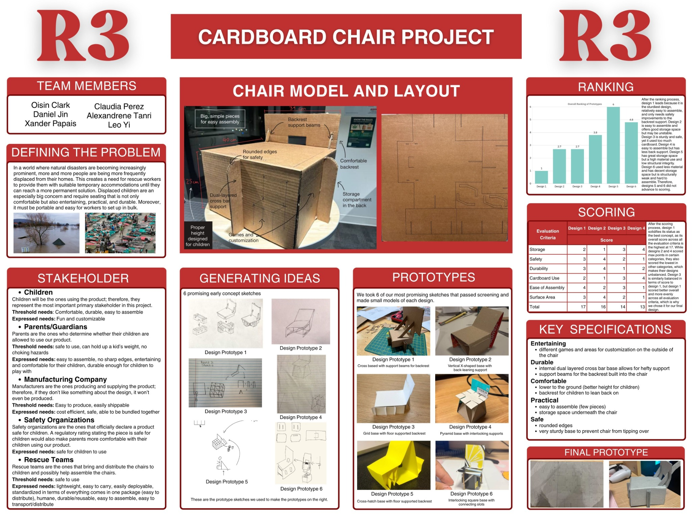
Child-sized disaster-relief chair developed through six concepts, physical prototypes, quantitative selection, and fabrication.
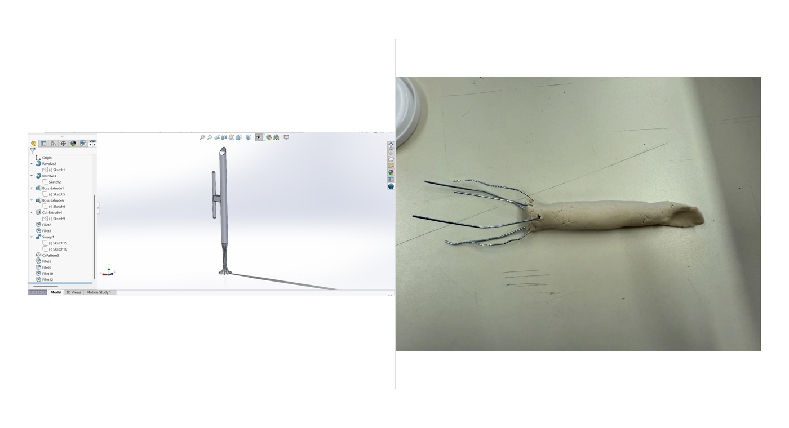
Assistive gardening design for a wheelchair user with limited hand function, using CAD, prototypes, requirements, and concept evaluation.
03 / MORE ENGINEERING
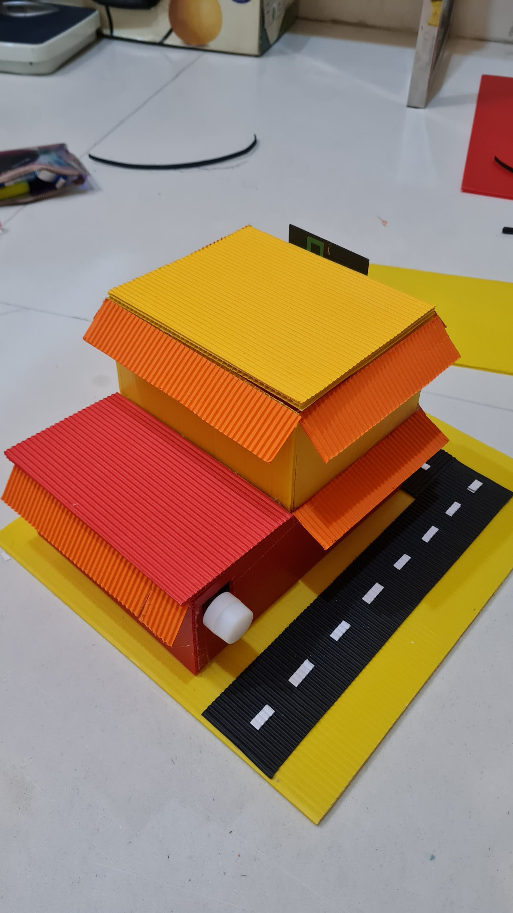
Solar House ModelTP4056 · DC-DC step-up · LEDs04 / OUTSIDE THE LAB
A few things I genuinely get way too excited about.
I’ve always liked collecting things, and the list has gotten pretty random over time. Sarasa pens are the longest-running one, but I also collect Funko Pops, Cosbi/Cosbaby figures, Pop Mart Minions, Harry Potter pieces, and prop replicas.
The prop replicas are mostly things I genuinely like from movies and shows — Marvel pieces, Harry Potter wands, a lightsaber, a Harley Quinn bat, and a few others.
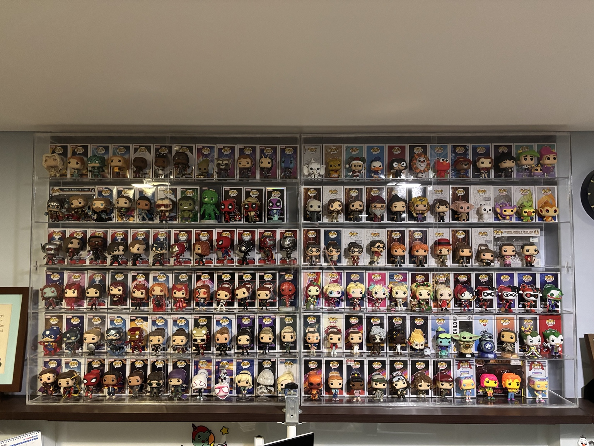
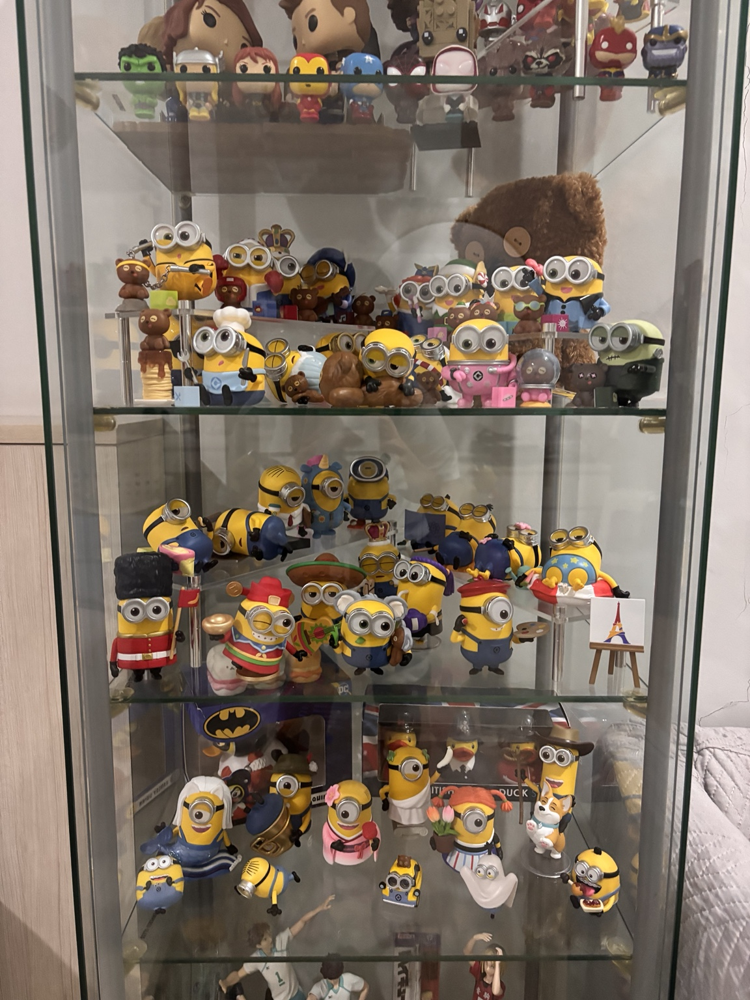
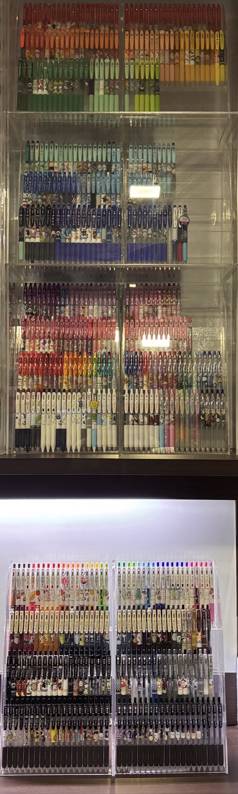
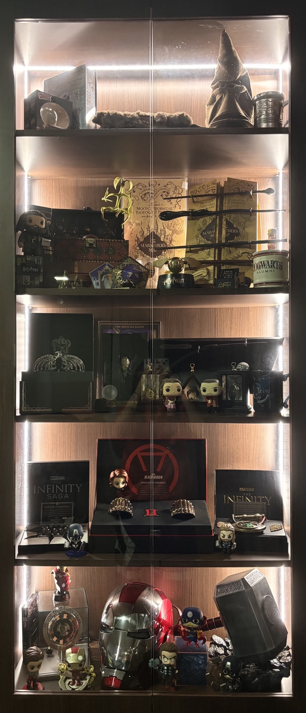
Mandrillus sphinx — the mandrill.
I’ve liked country flags for years, so at some point I ended up learning basically all of them.
ISTP — fittingly, I enjoy figuring things out by taking a hands-on approach.
I played throughout high school and ended up captaining my team. A lot of my favourite high-school memories came from playing with them.
I've played piano since I was four. I also play a bit of guitar, violin, and drums, and I love figuring out songs I like.
LEGO, PCs, keyboards, watches, Arduino systems — if it has parts, I probably want to understand it.
05 / TOOLBOX
SolidWorks · Tinkercad · MATLAB · Microsoft Excel
C · C++ · Arduino
Microcontrollers · Oscilloscope · Signal Generator · Multimeter · Soldering Iron · Breadboard · Circuit Analysis
3D Printing · Aviation Snips · Seamer · Nibbler · Hole Punch · Pop Riveter · Hand Tools
LET'S STAY CONNECTED
I'm always happy to talk engineering, design, hardware, or collections.